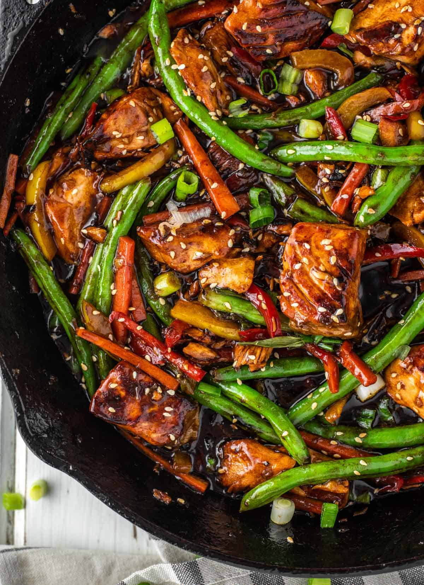

Salmon Stir Fry

Description
Preparation time: 30 mins
Cooking time: 10 to 30 mins
Serves: 2
In this salmon stir-fry, the fish is lightly coated in sesame seeds and served with lemony stir-fried vegetables, for a delicious, quick and healthy supper. Have all the ingredients prepared before you begin to cook.
Each serving provides 510 kcal, 32g protein, 16g carbohydrates (of which 10g sugars), 33g fat (of which 6g saturates), 8g fibre and 0.6g salt.
Source website
Ingredients
- 2 tsp sesame seeds
- 2 skinless salmon fillets (approx. 120g/4⅓oz each)
- 1 tbsp sunflower or vegetable oil
- ½ red onion, cut into 8–10 wedges
- 1 red pepper, deseeded and thinly sliced
- 1 carrot, thinly sliced
- 125g/4½oz broccoli, cut into small florets
- 25g/1oz unsalted cashew nuts, halved
- 2 garlic cloves, thinly sliced
- 15g/½oz fresh root ginger, peeled and cut into tiny matchsticks
- 1 tsp cornflour
- 1 tsp dark soy sauce
- ½ unwaxed lemon, grated zest and juice only
- 150ml/¼ pint vegetable stock
Steps
- Sprinkle 1 teaspoon of the sesame seeds over the top of each salmon fillet and press down lightly to help them stick.
- Heat 1 teaspoon of the oil in a large frying pan over a medium heat and cook the salmon fillets, seed-side down, for 2 minutes, or until lightly browned. Turn and cook the other side for 2 minutes. Then flip gently and cook for a further 1 minute on each side. Transfer to a plate.
- Return the pan to the heat, add the remaining oil and stir-fry the onion, pepper, carrot and broccoli for 4 minutes. Add the cashews and stir-fry for 2 minutes, until the vegetables are tender-crisp and the nuts are beginning to brown. Add the garlic and ginger and cook for a further minute, stirring regularly.
- Mix the cornflour with the soy sauce and lemon juice in a small bowl. Add the stock to the pan, pour in the lemon mixture and bring to a simmer. Cook for 10–20 seconds, stirring, until the sauce is slightly thickened.
- Return the salmon to the pan, nestling it among the vegetables, and heat through without stirring for 1–2 minutes. Sprinkle with grated lemon zest and serve.